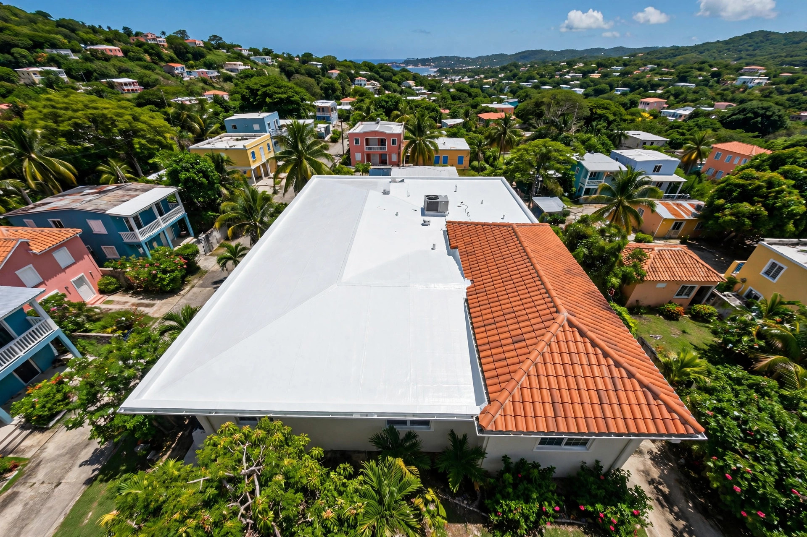

01
Instalación de tejas
Colocamos tejas nuevas con la técnica correcta para que aguanten sol, lluvia y viento.
Instalación y mantenimiento de tejas, sellado profesional de techos. En Ponce, con servicio en toda la isla.
En el techo, de verdad
Tejas bien puestas y sellado profesional: así se trabaja un techo.

Servicios
Colocamos tejas nuevas con la técnica correcta para que aguanten sol, lluvia y viento.
Reparamos tejas rotas o movidas, limpiamos y dejamos tu techo de tejas como nuevo.
Sellado profesional para que el agua no pase: bordes, cumbreras y superficies completas.
Sistemas de membrana para techos que exigen impermeabilización de verdad.
Base en Ponce, servicio en todo Puerto Rico. Donde esté tu techo, llegamos.
Especialistas en tejas. Instalación, mantenimiento y sellado: el techo completo en manos de quienes lo hacen todos los días.
Nosotros
Somos Tejas Y Sellado De Techos: nos dedicamos a instalar, mantener y sellar techos. Las tejas son nuestro oficio y el sellado nuestra garantía contra la lluvia.
Trabajamos desde Ponce y servimos toda la isla, con atención directa: hablas con nosotros, no con un call center.
Proceso
Escríbenos al 787-403-7661 y cuéntanos qué necesita tu techo.
Revisamos el techo y las tejas para recomendarte lo correcto: reparar, instalar o sellar.
Instalación de tejas o sellado aplicado con cuidado, sin atajos.
Revisamos el trabajo terminado contigo, punto por punto.
Preguntas frecuentes
¿Otra pregunta? Escríbenos por WhatsApp y te la contestamos directo.
PreguntarLas dos cosas. Instalamos tejas nuevas, reparamos las dañadas y sellamos el techo. Primero inspeccionamos para recomendarte lo que tu techo realmente necesita.
Sí. Sellamos la base del techo y los puntos críticos como cumbreras, valles y bordes, para que el agua no filtre entre las tejas.
Sí. Estamos en Ponce y servimos toda la isla.
Depende del tamaño del techo y de lo que necesite. Después de la inspección te decimos el tiempo estimado antes de empezar.
Por WhatsApp al 787-403-7661 o llamando. Coordinamos la visita y te cotizamos sin compromiso.
Ponce · Puerto Rico
Impulsa tu negocio
Una web profesional como esta para tu negocio. Precios de oferta por tiempo limitado.
$300 $99
$600 $150
La más elegida
$1,000 $200